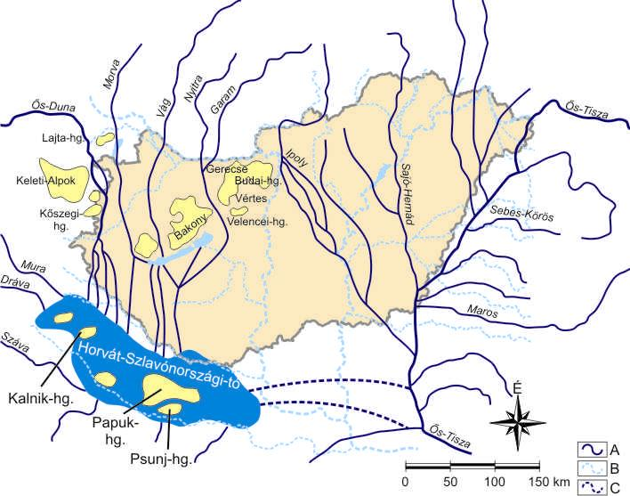

[ Prev ]
[ Index ]
[ Next ]
01 - Development of the river network
Created Pondělí 03 říjen 2011
(Presentation)
Development of the river network of the Carpathian Basin – the history of rivers and alluvial fans
- influencing faktors:
- a. tectonic activity
- 1. plate from south west to northwest
- 2. plate (=tektonická deska) orthogonal (=kolmá) na 1.
- area of Szeged sink
- b. climate
- wet → rains
- adopted vegetable after climat chnage
- c. water and sediment regima
- in plain areas is more rains that in mountains
- development of Carpatian b asin:
- Tetriary - Miocene:
- Carpatians was born
- African plate moved towards north (Africká se nasunula pod českou)?
- subduction of the Parathetys
- basin - most was water (Pannonian Sea)
- a. subsidence - development of the Pannonian Sea → Pannonian Lake for cca 20 - 5 mil years
- b. intensive erasion of the mountains, hills, development of deltas
- uplifted Carpatians
- Quaternary - Pleistocene, Holocene
- sinking aread
- Lottle Plain, Area of Szeged, Dáva Graben → propadání zlomů
- sinking mas 300-600m
- sinking mas in 6-7 (different) cycles, all the time diffrent area was active
- uplift: hills and mountains (50-350m)
- Hangary hadn't coverd by ice - it vas at periglacial (peri = perifeir) → cold, dry, windy
- Early Pliocene
- Danube → enter to Croatian-(Slavonian) lake

- všechny řeky v té době šly do tohoto jezara, např. i Morava, Vág
- rivers created meridional vallyes (rovnoběžné) → stále jedně řek, které tečou ze S na J
- uplift of Wienna Basin
- subsidence:
- Little Plain
- Croatian-Slavonic lake
- Dráva Graben
- Late Pleocene
- Danube:
- Danube turns to east but still go throught Szeged
- 2x allovial fans (Great Plain, Danube-TIsza interfluve)
- also it built terrasses - of begining of top of alluvial fan
- on the dry surface: sand dunes
- W
- 1. Balaton: 50 000 year ago old (relative young)
- 2. Danube: Szeged sing, Kecskemet lift → Danube změni směr → z Budapeště na Jih
- uplift of the hills → deeper vallyes
- 3. area of Kecskemetu lost river → became elevated → dry
- 4. Tisza - something at first area lift at SV and then Tisza připojila se k severu
- (první tekla na západ a pak na J → pak změnila směr a začla téct spíš na S kousek a pak na JZ)
- Early and Middle Peistocene
- names of ice ages: Güuz, Midnel, Riss, (Würm) - first 3 quarters
- Danube
- alluvail fan → subsidence (ice → něco jako bludné kameny)
- aeolian activity started
- loess formation → spraše
- visegrade gate -- is on the board with Szlovakiaország
- terrase system around Budapest → Pest is on terraces
- 500-700 m (fikness)
- sediment is good, because is filled with natural oil, natural everything - efemeral waters
- Tisza
- grabes - Szeged, Körös rigon (river Körös vtéká do Tiszy), Jázsság (around Kecskemes)
- Holocene
- begining was wet (after ice melting)
- increased precipitation → + still active subsidences
- along Danube and Tisza develepment of large floodplain (high-low) → along Tisza
Backlinks: